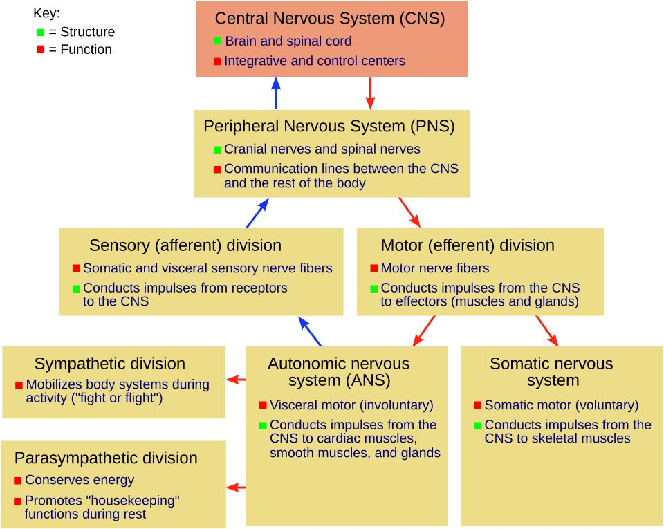
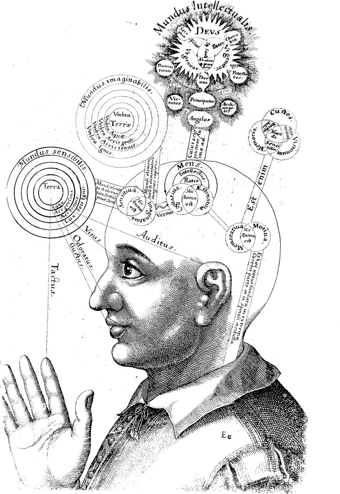

Cómo funciona el cerebro
Memoria, sueño, dolor, plasticidad, lenguaje, visión, emociones, consciencia y desarrollo: lo que sabe hoy la neurociencia, explicado con claridad.
Señales y circuitos
 Señales y circuitos
Señales y circuitosEl potencial de acción
El impulso nervioso: una onda eléctrica de todo o nada que recorre el axón gracias a la entrada y salida de iones. Cómo lo descifraron Hodgkin y Huxley con el axón gigante del calamar.
Leer → Señales y circuitos
Señales y circuitosPlasticidad cerebral
El cerebro cambia con cada cosa que aprendemos y puede reorganizarse tras una lesión. La base de la rehabilitación, del aprendizaje a cualquier edad y de la reserva cognitiva.
Leer →
Señales y circuitosEl desarrollo del cerebro
De un tubo de células en el embrión al cerebro adulto, pasando por la explosión de conexiones de la infancia y la remodelación de la adolescencia. Por qué los primeros años importan tanto.
Leer → Señales y circuitos
Señales y circuitosNeuroimagen funcional y conectoma
La resonancia funcional muestra qué zonas trabajan durante una tarea y la tractografía dibuja los cables del cerebro. Qué pueden decirnos estas imágenes y qué no.
Leer →Funciones de la mente
 Funciones de la mente
Funciones de la menteMemoria
No hay una memoria sino varias, en distintos circuitos del cerebro. Cómo se forma un recuerdo, por qué olvidamos, qué hace el sueño y cuándo los olvidos son motivo de consulta.
Leer → Funciones de la mente
Funciones de la menteEl sueño
Pasamos un tercio de la vida durmiendo, y no es tiempo perdido: el cerebro consolida recuerdos, limpia desechos y regula el ánimo. Fases del sueño, reloj biológico y cuánto hay que dormir.
Leer → Funciones de la mente
Funciones de la menteEl dolor
El dolor no está en el tejido dañado sino que lo construye el cerebro. Cómo viaja la señal, por qué el dolor puede persistir sin lesión y qué tipos de dolor existen.
Leer → Funciones de la mente
Funciones de la menteEl lenguaje
Hablar y entender dependen de una red de áreas, sobre todo del hemisferio izquierdo, que Broca y Wernicke empezaron a localizar en el siglo XIX. Qué es una afasia y cómo se rehabilita.
Leer → Funciones de la mente
Funciones de la menteLa visión
Ver no es fotografiar: el cerebro dedica casi un tercio de la corteza a construir lo que vemos. El viaje desde la retina hasta el lóbulo occipital y lo que ocurre cuando se lesiona.
Leer → Funciones de la mente
Funciones de la menteLas emociones
Miedo, alegría, tristeza o asco son respuestas del cerebro y del cuerpo que nos ayudan a sobrevivir. Qué papel tienen la amígdala, la corteza prefrontal y el cuerpo, y qué nos enseñó Phineas Gage.
Leer →
Funciones de la menteLa consciencia
Estar despierto y darse cuenta de uno mismo y del entorno. Qué estructuras la sostienen, qué son el coma y el estado vegetativo, y por qué sigue siendo uno de los grandes misterios de la ciencia.
Leer → Funciones de la mente
Funciones de la menteOrientación espacial
Cómo sabe el cerebro dónde estamos: células de lugar, células de rejilla y otras forman un «GPS» interno descubierto por O'Keefe y el matrimonio Moser. Por qué perderse puede ser un síntoma precoz de alzhéimer.
Leer →